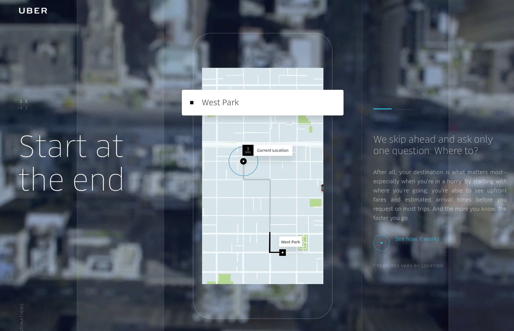
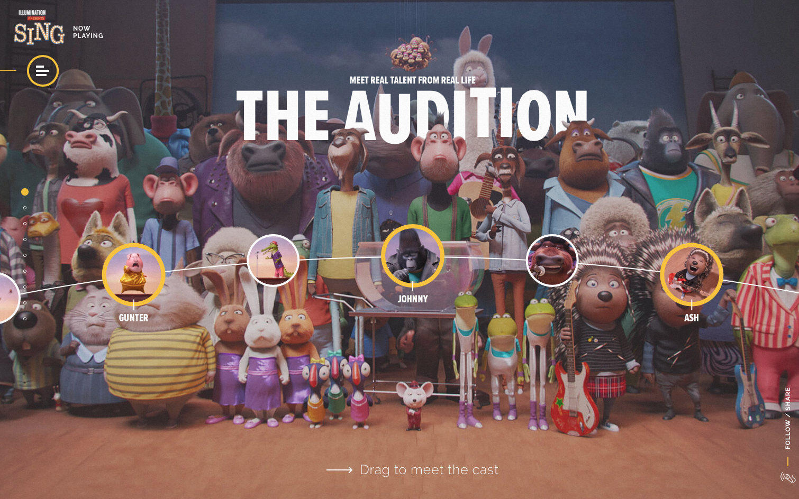
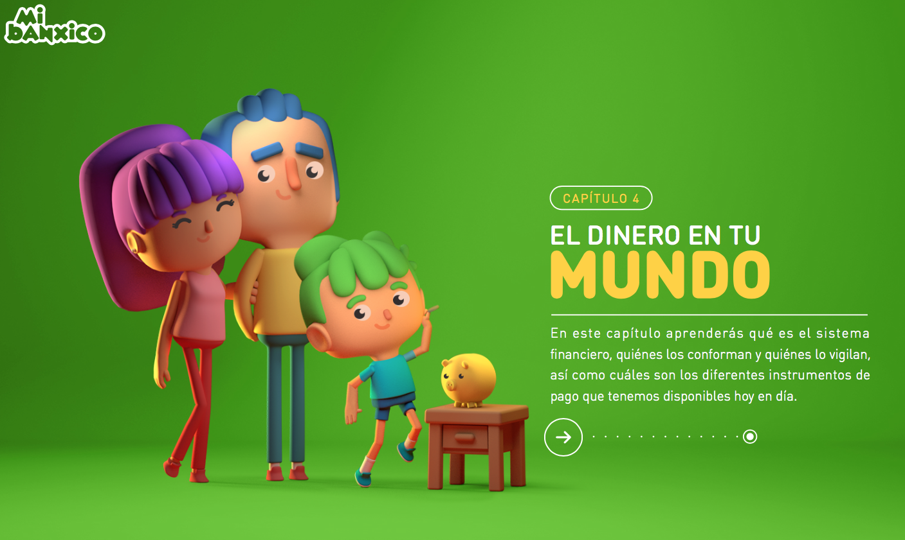
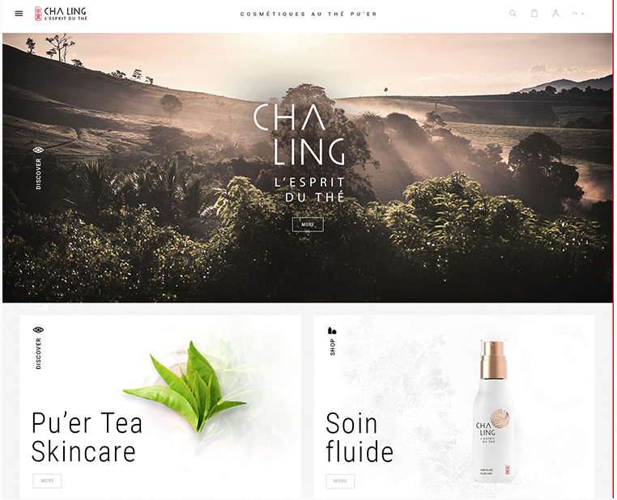

Weekly Assignment
Design & Authoring For Interactive Media
My Favorite website
Week 1 - February 1, 2017

Jongmin worked as a senior interactive developer and designer for over five years in South Korea. During that time, he successfully worked on projects for celebrated clients such as Samsung, SK and LG. At Firstborn Multimedia in New York, Jongmin was a Senior Developer worked on Pepsi,Sony and Cadillac. He has received multiple awards, including the Red Dot award, the IF award, the W3 award, the FWA, the Webby awards, the One Show award and the Cannes Lion award.
Jongmin Kim

Althought everyone might have Uber app already, I still love the cool website design with cool demostration flash.
Uber US
Week 2 - February 8, 2017

One of my favorite animation movie last year, Cant stop thinking about Gunter's dance move after watching it. Sing is a 2016 American 3D computer-animated musical comedy film produced by Illumination Entertainment.It was directed and written by Garth Jennings and co-directed by Christophe Lourdelet.
Sing

An interactive colorful site where young people can learn about financial education, through different important chapters of the history of money and banking system.
Mi Banxico
Week 3 - February 15, 2017

A great idea to interact with user with heart beats.
Heart Beats

A balance between French and Chinese craftsmanships, the tea cosmetics brand Cha Ling combines the globally renowned luxury expertise of LVMH with the purest and ancestral Pu'er tea from Yunan, China. After years of research and development, LVMH successfully created a sustainable range of products based on the rarest tea leaves on the planet, as well as a packaging respecting the environment. In January 2016, Cha Ling was born.
Cha-Ling